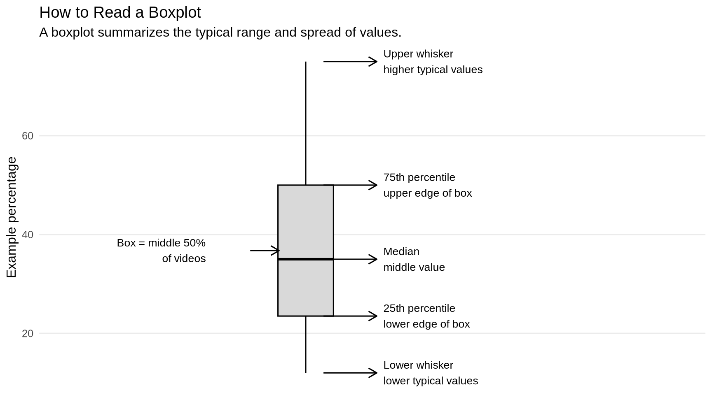

Browse All Insights
See published notes by category, including creator analytics, reporting systems, data collection, and mixed-methods analysis.
June 2, 2026
This guide explains how to read the main charts and tables in the Creator Performance Report. It is longer than a typical insight because it functions as a reference companion for readers who want help interpreting the report section by section.
Use this guide alongside the Creator Performance Report sample. For the shorter overview, see Using the Creator Performance Report.
This guide uses color-coded notes to separate background context, practical reading instructions, scope limits, and interpretation cautions.
| Color | Note type | What it means |
|---|---|---|
| Extra context | Background that explains where a metric, category, or report convention comes from. | |
| How to read | Practical guidance for interpreting a chart, table, or visual element. | |
| Scope / limits | Reminders about what the data includes, excludes, or depends on. | |
| Interpretation guardrail | Cautions against over-reading small samples, shares, correlations, or descriptive comparisons. |
This section establishes the baseline for the report. It summarizes overall scale, per-video efficiency, monetization, retention, and content format patterns before moving into more detailed trend, audience, timing, topic, and tag analyses.
This chart compares creator performance by format using two related but distinct measures: total views and average views per video.
Totals show overall contribution. Averages show per-video efficiency. A format, topic, or tag may have a high total because it appears often, because it performs well each time, or both. Read totals and averages together before deciding whether something is truly strong or simply frequent.
The Total Views panel shows overall audience volume, while the Average Views per Video panel shows per-upload efficiency. Reading both panels together helps separate formats that generate views through overall scale from formats that perform especially well each time they are posted. This matters because a format may lead in total views because it has strong individual performance, a high number of uploads, or both.
A format that ranks highly in both panels is both a major source of audience traffic and strong on a per-video basis. A format with high total views but a lower average may be benefiting from posting volume. A format with lower total views but a strong average may be a smaller but efficient option worth testing more often.
This chart should also be interpreted in relation to the creator’s goals. Views do not measure view duration or depth of engagement. Shorts may bring in more traffic and visibility, but standard videos and live streams may provide more space for sustained engagement, community building, brand recognition, and monetization.
This chart compares two performance signals over time: views and on-stream donation revenue. The views panel shows how audience traffic changed across the reporting period, while the revenue panel shows how much money was generated through donations made during streams.
Unless stated otherwise, revenue in this report refers to available on-stream donation revenue captured in the dataset. It does not represent total creator income and does not include Streamlabs donations, YouTube memberships, ad revenue, sponsorships, merchandise, subscriptions, or other off-platform income.
The value of this chart is that it allows readers to compare audience movement and donation movement side by side. When views and donation revenue rise together, it may suggest that higher audience traffic is also translating into stronger direct support. When views rise but donation revenue does not, the creator may be reaching more people without necessarily increasing financial engagement. When donation revenue rises without a similar increase in views, it may indicate stronger support from a smaller or more committed audience.
Views and donations measure different kinds of performance. Views show reach and visibility, while on-stream donations reflect direct financial support from viewers. A strong month is not always the month with the most views; depending on the creator’s goals, a month with fewer views but stronger donation activity may be just as meaningful.
This chart shows total on-stream donation revenue by content type and publish month. The x-axis shows the month and year when videos were published, while the bars show how much donation revenue was associated with each content type in that period.
This is important to read as a publish-month cohort view, not a cash-flow chart. In other words, the chart groups videos by when they were published and summarizes the revenue associated with those videos. It should not be interpreted as revenue earned only during that specific calendar month.
The colors and legend allow readers to isolate specific month-and-content-type combinations. Because the legend can include many entries, users may need to scroll through it to find the period or format they want to focus on.
The labels on the bars provide the total revenue value, and the n= label shows how many videos are included in that group. This is important because a high revenue total may reflect one strong upload, several smaller uploads, or a combination of both.
Always check the number of videos behind a metric. A category with only a few videos can look unusually strong or weak because one outlier has a large effect. Patterns based on more videos are usually more reliable than patterns based on only one or two uploads.
A sortable table is included below the chart for readers who want to inspect the aggregated data directly. The table can be used to sort by month, content type, total revenue, video count, or average revenue per video, and it can also be downloaded for further review.
The tables provide the exact values behind the charts. Use the search box to find a specific topic, tag, content type, or video. Use the sorting controls to compare metrics such as total views, average views per video, median views, total revenue, and video count. Use the CSV button to download the aggregated data for additional review.
This chart shows the distribution of Average View Percentage by content type. Average View Percentage measures how much of a video viewers watched on average, making this chart useful for understanding retention rather than raw audience size.
Each box summarizes the range of Average View Percentage values for videos in that content type. The line in the middle of the box is the median, or the typical middle value. The bottom and top of the box show the middle range of videos, from the 25th percentile to the 75th percentile. The lines extending above and below the box, often called whiskers, show the lower and higher ends of the typical range.

Highlighted points represent videos in the top quartile for their content type, meaning they are among the stronger performers within that format. Readers can hover over these points to identify the specific videos or streams behind the standout results.
This chart should be interpreted with format differences in mind. Shorts are expected to have higher average view percentages because they are short by design. Live streams often have lower average view percentages because they are longer and viewers may join for only part of the broadcast. That does not automatically mean live streams are performing poorly; it means they serve a different purpose.
Trend charts show how performance changes across the reporting window. They help readers see whether a format is gaining momentum, staying relatively stable, declining, or depending on occasional spikes.
This chart shows how on-stream donation revenue changes over time by content type. Each panel separates a different format, such as live streams, Shorts, and standard videos, so readers can compare whether revenue patterns are stable, rising, declining, or highly variable across formats.
The x-axis shows the publish date, while the y-axis shows total estimated revenue associated with the content in that panel. The individual points show observed revenue values over time, and the darker trend line helps summarize the broader direction of the data.
In trend charts, individual points show observed performance values, while the darker line summarizes the broader direction over time. A single spike may represent a standout upload or event, but the trend line helps show whether performance is generally rising, falling, flattening, or changing inconsistently.
This chart shows how total views change over time by content type. Each panel separates a different format so readers can compare audience demand across formats without combining very different kinds of content into one trend.
This chart should be read alongside the revenue trend chart. Views and revenue do not always move together. A format may bring in more audience traffic without generating much direct donation revenue, while another format may have fewer views but stronger monetization or deeper viewer support.
Audience composition charts describe who the content is reaching, not just how many people watched.
One limitation of standard YouTube analytics exports is that they do not always make it easy to view age and gender together as a combined audience segment over time.
This chart shows how the audience mix changes over time by age group and gender. Each panel separates viewers by gender, while the colored lines show the share of the audience represented by each age group.
Charts that show audience share or share of total performance are percentage-based. If a group’s share increases, that means it became a larger portion of the measured total. It does not always mean the raw number of viewers or revenue dollars increased.
The main purpose of this chart is to help creators understand whether their content is reaching the audience they expect, whether their audience is broadening, and whether certain demographic groups are becoming more or less central over time.
This part of the report looks at timing, collaborations, topics, and classified title tags. These sections are useful for planning, but they should be read carefully because they are descriptive comparisons.
This chart compares per-video performance for uploads published on weekdays versus weekends. It uses two related measures: views per video and on-stream donation revenue per video.
Each point represents an individual video. The boxes summarize the typical range of performance for weekday and weekend uploads, while the middle line in each box shows the median. The white point represents the mean, or average.
Timing, topic, collaboration, and tag charts describe historical patterns. They should not be read as proof that a specific day, topic, tag, or collaboration caused higher performance. Other factors such as format, promotion, stream length, audience availability, and special events may also shape the result.
This chart shows the share of total performance attributed to each day of the week. The top panel shows each weekday’s share of on-stream donation revenue, while the bottom panel shows each weekday’s share of total views.
Larger bars mean that videos published on that day contributed a larger portion of total views or total donation revenue during the selected reporting window. A larger share does not necessarily mean that a weekday is automatically better; some days may have more videos published, stronger topics, collaborations, or special events.
This chart compares average per-video performance for collaborative and non-collaborative uploads. This is different from comparing total views or total revenue. By using averages per video, the chart asks a more direct question: when this creator posts a collaborative or non-collaborative upload, which type tends to perform better per upload?
The table below the chart provides the detailed comparison. It includes video counts, total views, total revenue, average views per video, average revenue per video, and lift compared with non-collaborative uploads.
This chart compares performance across classified content topics using two measures: total views and on-stream donation revenue. Each bar represents a topic category, making it easier to see which types of content contributed the most audience traffic and direct donation activity during the selected reporting window.
Topics are created as broad interpretive groups from title signals, not exact one-to-one labels. A single title can contain more than one signal, so the classification process tries to preserve the main activity while also marking important framing cues such as collaborations, milestones, monetization, serialization, performance, conversation, or meme/viral hooks. For more detail, see How Stream Title Classification Works.
The views panel shows which topics generated the largest share of audience reach. The revenue panel shows which topics generated the most on-stream donation revenue. Reading the two panels together helps identify whether the same topics are driving both visibility and financial support.
This chart compares performance across the most common classified title tags in the report. These tags are created during the title-classification process, where each YouTube title is analyzed and assigned structured labels based on the wording of the title.
These tags should be understood as analytic tags, not necessarily the original tags entered into YouTube Studio. They are generated from the report’s classification schema to help summarize patterns across titles.
The tags in this report are generated through the title-classification process. They are not necessarily the same as the original tags entered into YouTube Studio. Because one video can receive multiple analytic tags, tag categories can overlap and should be interpreted as directional signals rather than mutually exclusive groups.
Because tags can overlap, this chart should not be read as a set of mutually exclusive categories. The same video may contribute to several tag totals. For that reason, tag performance is best interpreted as a directional signal.
This chart shows the average views per tagged video for each classified title tag. Unlike the previous tag performance chart, which focuses on total views and total revenue, this chart focuses on per-video efficiency: when a video has a given tag, how many views does it receive on average?
This distinction matters because a tag can appear strong for different reasons. A tag may have high total views because it appears on many videos, but that does not necessarily mean each tagged video performs especially well. Average views per tagged video helps control for posting volume by showing which tags tend to perform better each time they appear.
The table below provides the detailed tag-level data, including video count, total views, average views per video, total revenue, average revenue per video, share of views, and share of revenue. A tag with a high average but only a few videos may be promising, but it needs more testing before being treated as a reliable pattern.
See published notes by category, including creator analytics, reporting systems, data collection, and mixed-methods analysis.